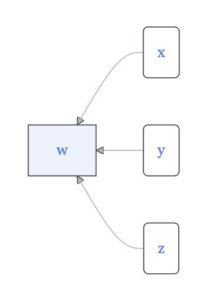

Chapter 02 Catalog
NoteGroup: unclassified
File: Chap-02/avoid-put-socks.qmd Status: sketch
Exercise 1 EXERCISE: Windy. How to operationalize windiness. Sea state, Beauford scale, Richter Scale, Tornado and hurricane scales.
File: Chap-02/elephant-hold-knob.qmd Status: null
Exercise 2 In much of the world, fuel use by individual passenger vehicles is operationalized in units of liters per 100 km with typical values of [5 to 15] liters per 100 km.
In the US, in contrast, fuel use is operationalized in units of miles per gallon. Typical values are [15 to 40] mpg.
Behind these diverging styles are choices made by engineers and others.
- A convenient feature of any operationalization is that the numerical value go up as the thing being operationalized goes up. Two different names are available: “fuel consumption” and “fuel economy.” Which naming scheme is appropriate with this convenience alignment of name and values?
ehk-1-ckse
- Another convenient feature for units that are in everyday use is that the range of typical values be from 1 to 100, that is, use two digits.
If the international style used SI-base units, the measure would be cubic-meters per meter. Keeping in mind that a cubic-meter is exactly 1000 liters, and that a kilometer is exactly 1000 meters, what would be the SI equivalent of the range [5-15] liters per 100 km?
ehk-2-emxl
- What is the dimension of the international style of measurement?
ehk-3-dkck
- What is the dimension of the US style of measurement?
ehk-4-ukws
FYI: To develop intuition, it can be useful to have a physical model in mind when interpreting quantities. For fuel consumption, an interesting model is a mini-pipeline. Imagine a car getting its fuel from a pipeline as it goes along. For a typical car, the required pipeline would be 1-2 mm in diameter: think thick fishing line.
File: Chap-02/frog-get-laundry.qmd Status: draft
Exercise 3 In discussing the formation of new physicians, we combined two facts: the total number of medical students is 100,000 and medical school takes four years. This led to our estimate that there will be 25,000 graduates each year. Revisit this model taking into account that not all entering medical students graduate. Assume that attrition in the first year is 10%, then 5% in each of the two successive years.
If there are 100,000 students all together, how many graduate each year?
File: Chap-02/girl-lose-hamper.qmd Status: sketch
Exercise 4
- luminous intensity (light) L as the last of the formal SI dimensions.
File: Chap-02/jellyfish-lay-bolt.qmd Status: sketch
Exercise 5 meta-data synonyms: codebook, data dictionary, documentation
File: Chap-02/jellyfish-open-spoon.qmd Status: sketch
Exercise 6 Using the broad sense of “dimension” introduced in this chapter, write down 10 familiar dimensions of an automobile. Remember that “dimension” covers not just spatial extent but also other properties of the car.
ADD OTHER VERSIONS, E.G. a chair, a computer, a flowering plant
File: Chap-02/kitten-bend-door.qmd Status: draft
Exercise 7 DO WE WANT TO BRING IN mass vs weight as different operationalizations?
Mass as operationalized on a scale by the force on a spring, or the force produced by a leveraged counterweight on a balance.
Similarly, you may recall that weight (M L T-2) is not the same kind of thing as mass ({{ var dim.mass >}}). The idea of weight goes back to antiquity, but “mass” is much more recent, emerging from Newton’s work with gravity in the late 1600s.
File: Chap-02/nephew-dig-lamp.qmd
Exercise 8 The text distinguishes between a “unit” and a “dimension.” Explain in your own words how a dimension differs from a unit. Why is it possible to have multiple different units that all correspond to the single dimension of “Length”?
File: Chap-02/pony-meet-window.qmd
Exercise 9

graph RL A(x) B(y) C[w] D(z) A --> C B --> C D --> C classDef exogenous fill:#fff,stroke-width:1px class A exogenous class B exogenous class D exogenous
In the above diagram …
- Which quantities are endogenous?
dddd
- How many functions are indicated by the diagram?
dddd-2
- Which quantity is the output of a function?
dddd-3
File: Chap-02/puppy-hang-blanket.qmd
Exercise 10 For each of the following four dimensions, list at least three different unit names that correspond to that dimension:
- Length (e.g., meter…)
- Time
- Volume
- Mass
File: Chap-02/reptile-beat-window.qmd
Exercise 11 The chapter states that “per” is shorthand for a specific mathematical operation. What is that operation?
File: Chap-02/seaweed-bend-laundry.qmd Status: sketch
Exercise 12 EXERCISE: GDP as an operationalization of the size of the economy, unemployment (which has a specific definition and can do odd things like go down when people give up on looking for work), labor-force participation, consumer confidence, market capitalization of a company
File: Chap-02/seaweed-hang-ring.qmd
Exercise 13 The text notes that there is no equivalent English word for the operation of multiplication in units. How are units formed by multiplication typically written or spoken compared to those formed using “per”?